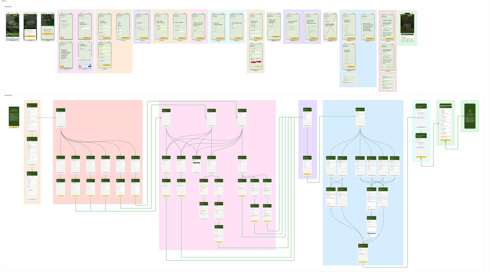
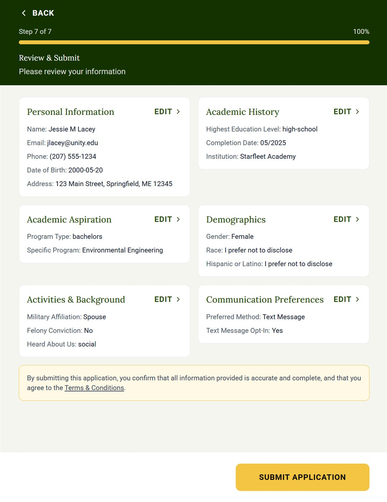

Case Study
Redesigning Unity Environmental University's admissions application from a static, one-size-fits-all form into a dynamic, intelligent flow that only asks what it actually needs to know.
01 — The Problem
The existing Unity admissions application was a static, linear sequence of 18 steps, the same 18 steps for every applicant, regardless of who they were or what program they were pursuing. A recent high school graduate saw the same fields as a returning adult learner. A transfer student with 60 credit hours was asked questions only relevant to first-time applicants. A prospective student with no military background was prompted to enter military affiliation details.
The problems weren't isolated; in fact, they compounded each other. Technical glitches with autofill or predictive text fields caused errors mid-form. Questions that were only relevant to some users but not others created confusion about whether the user was in the right place. The sheer visible length of the application created a psychological barrier before users had even begun.
"The complexity wasn't in the questions. It was in showing all of them to everyone."
Before
After
02 — Discovery
The redesign started in two places simultaneously: inside the existing form, and in conversation with the recruitment staff who processed its output every day.
The form audit mapped every field, every step, and every condition, or lack thereof. Most fields had no logic attached to them at all. They appeared for every user because no one had ever modeled the decision tree underneath the application. The form wasn't badly designed, it was just never designed as a flow, as it was assembled as a list.
Key Discovery
The new student recruitment staff interviews revealed something the form audit alone couldn't: the fields that were causing the most data quality problems downstream were the same fields that appeared to users who had no reason to fill them out. The form was generating noise that staff then had to manually correct. The UX failure was creating an operational failure.
The stakeholder interviews also surfaced a priority ordering that wasn't visible in the original form. Some fields, like program intent, contact information, basic identity, were needed early to route applicants correctly. Others like academic history details, and military background, only mattered for specific applicant types and could be gated behind prior answers or dynamically present reworded questions more specific to that users situation or history.
That ordering became the architecture of the new flow.
Form audit
Mapped all existing fields, their sequence, and the conditions (or lack thereof) governing when they appeared. Identified which fields were universal vs. applicant-type-specific.
Recruitment stakeholder interviews
Interviewed recruitment and staff to understand what data they actually needed, which fields generated bad or incomplete data, and where downstream processing was breaking down.
Decision tree mapping
Built the underlying logic model — which questions gate which subsequent questions. Identified the branching paths: first-time students, transfer students, returning adult learners, military-affiliated applicants, bachelor's degree seeking, and master’s degree seeking.
Grouping and sequencing
Organized fields into logical thematic stages, sequenced so that early answers narrow later options. Simplified overloaded dropdowns to reduce cognitive load and input errors.
Prototype and flow documentation
Built the complete high-fidelity flow in Figma — all conditional paths, all screen states, all branching logic. Documented for development handoff.
03 — The Solution
The redesigned application is organized into seven named stages, each with a clear purpose, a defined scope, and conditional logic that adapts the experience in real time based on what the applicant has already told us.

Old flow vs. new flow — structure comparison. Click to view full size.
Sets expectations before the applicant begins. Reduces anxiety by making the scope of the task legible upfront.
Contact details and basic identity. Universal — every applicant sees this stage. Establishes the record before anything conditional begins.
Prior education background. The answers here are the primary gating mechanism — they determine which subsequent fields appear in Steps 3 and 5. A first-time student and a transfer student take materially different paths from this point forward.
Program selection and degree intent. Fields adapt based on Step 2 answers — eligible programs are filtered to match the applicant's academic history, so users are never shown programs they don't qualify for.
Optional demographic data. Presented as a clearly optional, separate stage — not buried within a longer form where its optionality was unclear.
Military affiliation, conviction history, and other background disclosures. These fields are fully conditional — a student with no military background sees none of them. The branching here was the most complex in the original form to untangle.
How the applicant wants to be contacted. Separated from personal information so it reads as a distinct, lower-stakes choice — not one more field in an already-long form.
Summary of all entered information with edit access before final submission. Only shows what the applicant actually filled in — not the full 18-step form.
Application submitted. Next steps communicated clearly. The first moment of relief in what was previously an anxiety-producing process.
The Design Principle
The new form doesn't ask less, it asks the same things, but what changed is who gets asked what, and when. The complexity moved out of the user's experience and into the logic layer where it belongs. That's information architecture doing its actual job.

Step 7 — Review & Submit, product screenshot
04 — The Details
The most meaningful improvements in this redesign aren't visible in any single screen, they live in the interactions between screens, and in decisions made at the field level.
Several fields in the original form used type-ahead autocomplete, a feature that, in theory, speeds up input and reduces errors. In practice, the dropdowns were overpopulated and the autocomplete logic would trigger at the wrong moment, creating glitches that caused values to either not save correctly or surface error states that confused users.
The solution wasn't to remove autocomplete, it was to rethink the question structure upstream. By asking filtering questions earlier in the flow, I could dramatically reduce the option set for downstream dropdowns. A student who has already indicated they're pursuing an undergraduate degree doesn't need to see graduate program options in a dropdown. Smaller sets mean fewer edge cases, fewer glitch opportunities, and a faster, more confident selection experience.
The decision to move Academic History to Step 2, immediately after personal information, was deliberate. It's the question whose answer does the most work. Once the form knows whether someone is a first-time student, a transfer student, or a master’s degree-seeking student, it can confidently narrow every subsequent stage. That single early question eliminates entire branches for most users.
This is the difference between a form that collects data and a form that understands context. The original form collected data, while the new one builds a picture as it goes and uses that picture to stop asking unnecessary questions.
In the original 18-step form, progress indicators were either absent or misleading — showing step 6 of 18 when many of those 18 steps were irrelevant to the user viewing them. The new design shows progress through stages, not steps, and only counts the stages that apply to this specific applicant. An applicant with no military background and a straightforward academic history genuinely has fewer stages than someone with a complex transfer situation — and their progress indicator reflects that reality.
05 — Reflection
Honest retrospective
The discovery process which included auditing the form and interviewing recruitment staff, was the right foundation. If I were to do this again I'd add one more research layer I didn't have time for: observational sessions with prospective students actually completing the application. Stakeholders know what data they need; they don't always know where applicants hesitate, which fields create confusion, or where the emotional friction lives. The form audit tells you what's there. It can't tell you what the experience of encountering it feels like.
We could only institute tracking analytics at every step on the new form to track abandonment rates per stage, time spent per step, error rates per field. The absence of baseline metrics from the original form means the redesign's impact will be directionally visible but not precisely measurable. That's a gap I'd want to close in any future engagement of this type.
The design is complete and implementation is in progress. The case study will be updated with outcome data once the new form is live and has been in production long enough to generate a meaningful signal.